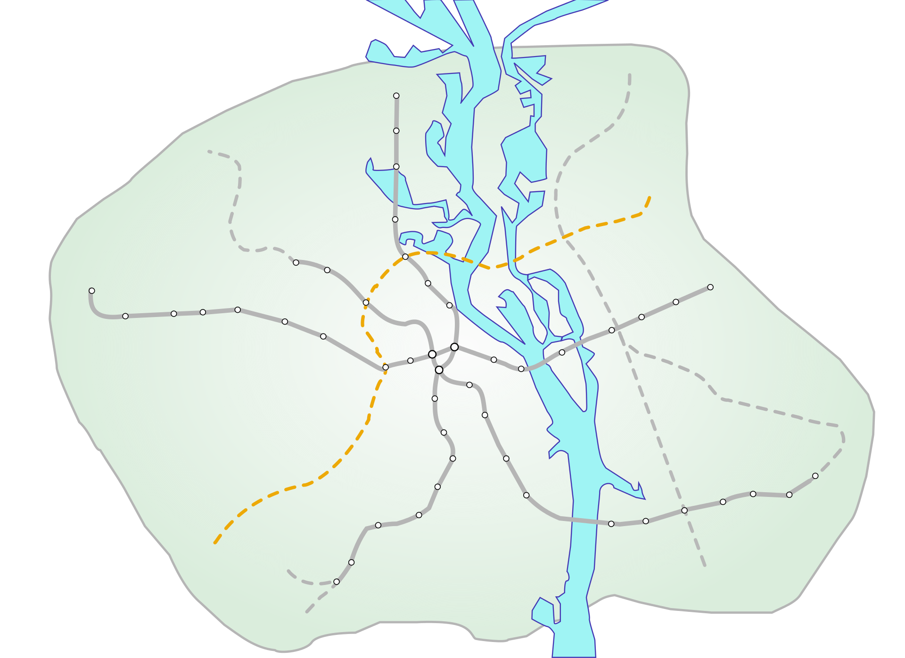

Подільсько-Вигурівська лінія

Подільсько-Вигурівська лінія |
|
|  | |
Подільсько-Вигурівська лінія (з 1997, попередні назви — Подільсько-Воскресенська або Вокзально-Воскресенська) — майбутня нова лінія Київського метрополітену. Станом на 2012 рік планувалося, що після закінчення будівництва лінія матиме 12+6 станцій і понад 20 км довжини. Проектний термін будівництва першої черги — 62 місяці.
|
|